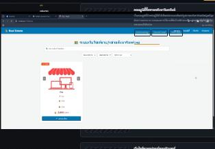
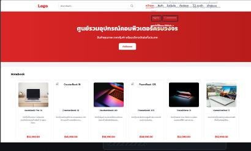
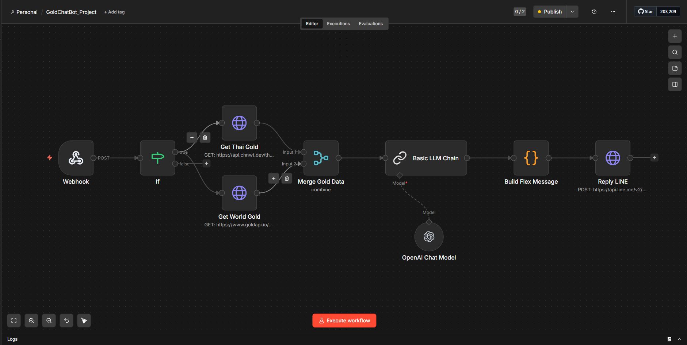

Frontend
ทำหน้าจอให้ใช้งานได้จริงทั้งบนมือถือและเดสก์ท็อป จัดการ state และเชื่อมต่อ API
Full-stack Developer
สร้างเว็บแอปพลิเคชันครบวงจร ตั้งแต่หน้าจอผู้ใช้ไปจนถึงระบบหลังบ้านและฐานข้อมูล สนใจงานด้าน AI Chatbot, ระบบอัตโนมัติ และการวางโครงสร้างซอฟต์แวร์ให้ดูแลต่อได้ในระยะยาว
ผมเป็นนักพัฒนาซอฟต์แวร์ที่ทำงานได้ทั้งฝั่งหน้าบ้านและหลังบ้าน เริ่มจากการเขียนเว็บด้วย HTML และ CSS แล้วขยับมาทำงานกับ React ควบคู่กับการเขียน API ด้วย Node.js และ C# ช่วงหลังผมสนใจงานด้าน AI เป็นพิเศษ โดยเฉพาะการต่อ Chatbot เข้ากับระบบ RAG และโมเดลภาษาเพื่อให้ตอบคำถามได้แม่นยำขึ้น
ผมให้ความสำคัญกับการควบคุมเวอร์ชันโค้ดอย่างเป็นระบบ ตั้งขั้นตอนทดสอบและส่งมอบงานแบบอัตโนมัติ (CI/CD) ผ่าน GitHub Actions และทดสอบ API ด้วย Postman ก่อนส่งมอบงานทุกครั้ง
ทำหน้าจอให้ใช้งานได้จริงทั้งบนมือถือและเดสก์ท็อป จัดการ state และเชื่อมต่อ API
ออกแบบและพัฒนา API ระบบยืนยันตัวตน และเชื่อมต่อกับบริการภายนอกอย่าง LLM หรือ LINE
ออกแบบตาราง ความสัมพันธ์ และเขียน SQL สำหรับดึงข้อมูล รวมถึง Vector DB สำหรับงาน RAG
ควบคุมเวอร์ชันโค้ด ตั้งขั้นตอนทดสอบ–ส่งมอบอัตโนมัติ และทดสอบ API ก่อนส่งงานทุกครั้ง

เว็บคอมมูนิตี้สำหรับผู้ใช้ทั่วไปโพสต์ขายและโพสต์รูปภาพอสังหาริมทรัพย์ พร้อมข้อความบรรยาย ออกแบบการใช้งานให้คล้ายฟีดของ Facebook เพื่อให้ผู้ใช้คุ้นเคยและเข้าถึงง่าย
ดูซอร์สโค้ดบน GitHub ↗
ออกแบบและพัฒนาเว็บไซต์ขายอุปกรณ์คอมพิวเตอร์ ครอบคลุมตั้งแต่หน้าแสดงสินค้า ตะกร้าสินค้า จนถึงระบบสั่งซื้อ ใช้ MySQL เป็นฐานข้อมูลหลักของระบบ
ดูซอร์สโค้ดบน GitHub ↗ระบบแชทบอทให้ความรู้ด้านการลงทุนทองคำ ใช้เทคนิค RAG (Retrieval-Augmented Generation) ดึงข้อมูลที่เกี่ยวข้องจาก ChromaDB แล้วส่งต่อให้ LLM ผ่าน Ollama ประมวลผลและตอบคำถาม ให้ตรงประเด็นและอ้างอิงข้อมูลจริง

พัฒนา Chatbot สำหรับให้บริการผ่าน LINE ผู้ใช้สามารถส่งคำถามหรือขอข้อมูลผ่านแชท LINE ได้โดยตรง ระบบจะประมวลผลข้อความและเชื่อมต่อข้อมูลจากบริการภายนอกเพื่อประกอบการตอบคำถาม
ดูซอร์สโค้ดบน GitHub ↗เลื่อนดูใบรับรองทั้งหมด 17 ใบ จาก Microsoft Learn (สาย GitHub & Copilot)
ยินดีรับพิจารณางานประจำและงานโปรเจกต์ ติดต่อได้ตามช่องทางด้านล่าง — ตอบกลับภายใน 1–2 วันทำการ